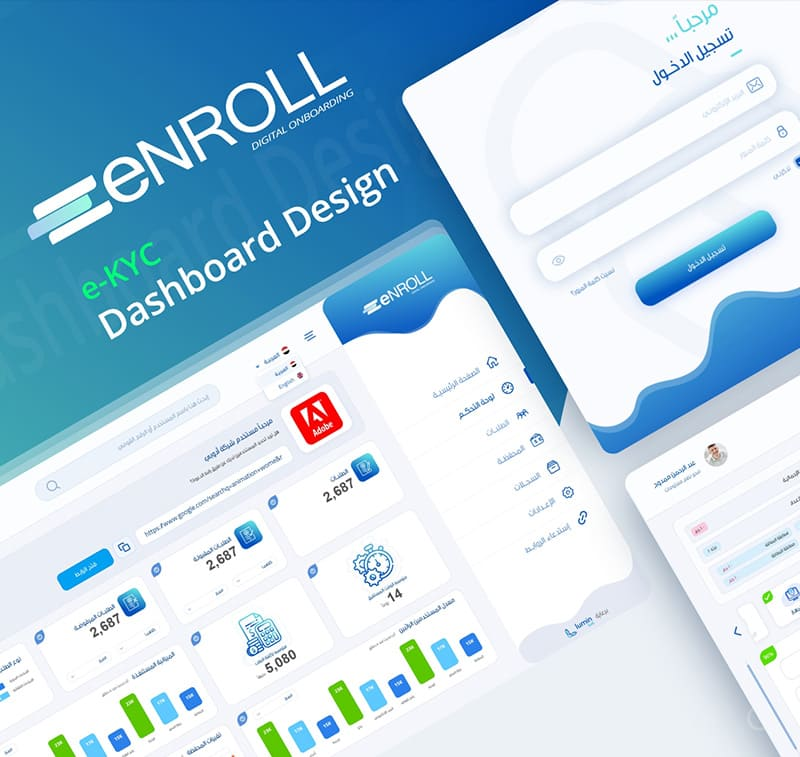

Lumin Soft proudly announced a groundbreaking achievement: becoming the inaugural company to obtain certification for its electronic Know Your Customer (eKYC) service. This milestone not only marks a historic moment for Lumin Soft but also connotes a significant leap forward in Egypt's embrace of cutting-edge technology and regulatory compliance.
Lumin Soft's eKYC solution disrupts the traditional KYC paradigm by introducing a thoroughly modernized, environmentally friendly, and highly resilient method for remotely verifying customer identities. Rather than relying on paper documentation and in-person verification processes, the new solution streamlines the entire authentication procedure, offering unparalleled convenience and efficiency.
This innovative approach harnesses state-of-the-art technologies, including AI-powered Optical Character Recognition (OCR) systems, cutting-edge Facial Recognition Algorithms, and intricate Liveness Detection mechanisms. By seamlessly integrating these advanced technologies, the system enables businesses to swiftly and accurately verify customer identities, even in remote or digital environments.
In essence, Lumin Soft's eKYC solution represents a significant rise in the realm of customer identity verification, offering businesses a streamlined, secure, and technologically advanced means of compliance with regulatory requirements.